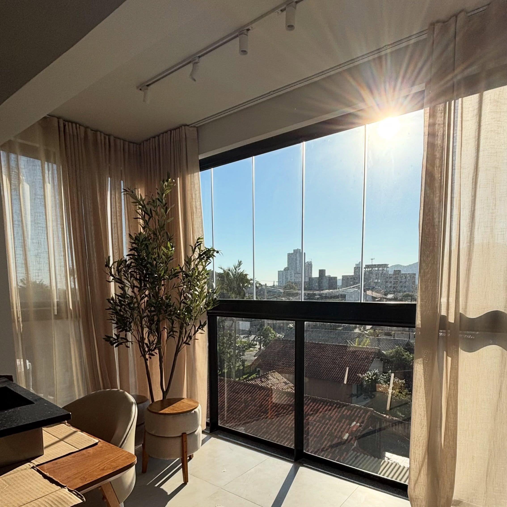

CONTATO ANFITRIÕES

SEU CANTINHO EM PENHA
Seja bem-vindo
ao nosso apê!
Que bom ter vocês aqui, esse sonho só é completo com vocês! Desfrute de descanso e aconchego, preparamos tudo da melhor maneira pra você e sua família!
WI-FI
Rede: 405 B
Montanharussanasacada26
CHECKOUT
Até as 12h
02 · SUA CHEGADA
Como fazer
o check-in.
As orientações para sua chegada estarão aqui. Antes de acessar o apartamento, consulte as instruções dos anfitriões.
Seu check-in,
passo a passo.
Vídeo disponível em breve
03 · CUIDADOS COM O APÊ
Regras básicas.
Boa convivência.
Ambiente livre de fumaça.
Não é permitido fumar dentro do apartamento.
Hospedagem sem pets.
Não é permitido Pets.
Silêncio e descanso.
Respeite o silêncio, especialmente entre 22h e 8h.
Hóspedes da reserva.
Respeite a capacidade máxima de hóspedes informada na reserva.
Sem festas ou eventos.
Não são permitidas festas ou eventos no apartamento.
Cuide do nosso cantinho.
Cuide dos móveis, eletrodomésticos e utensílios como se fossem seus.
Louças limpas após o uso.
Ao utilizar louças e utensílios, deixe-os limpos após o uso.
Descarte o lixo corretamente.
Descarte o lixo nos locais indicados no prédio.
Antes de sair.
ATENÇÃO: Ao sair, confira se portas, janelas e aparelhos estão devidamente fechados/desligados.
Percebeu algum problema?
Ao perceber qualquer problema ou dano, avise o anfitrião imediatamente.
Tenham uma excelente estadia!
04 · DESCUBRA A REGIÃO
Endereço e
localizações.
05 · POR PERTO
Localizações
importantes.
06 — CUIDADOS QUE FAZEM A DIFERENÇA
Nosso cantinho.
Seu carinho.
A cozinha está aqui para você aproveitar — e para os próximos hóspedes também. Pequenos cuidados deixam tudo melhor.
Cuide com carinho.
Esse apê também é seu.
Esse apê também é seu.
O corte é na tábua.
Use tábuas para cortar os alimentos. Evite cortar diretamente na bancada ou na mesa.
Panela quente? Use um descanso.
Nada de panela quente direto nas superfícies. Use os descansos disponíveis na cozinha.
Levante, não arraste.
Não arraste panelas, eletros ou objetos. Assim evitamos riscos e marcas nas superfícies.
Um cuidado com os eletros.
Use cada aparelho conforme sua finalidade. Ficou em dúvida sobre como usar? Consulte um vídeo explicativo no YouTube. Ao sair, confira se estão desligados e, quando possível, retire-os da tomada.
Pia livre, tudo flui.
Evite jogar restos de comida ou gordura na pia. Descarte os resíduos antes de lavar a louça.
Sujou? Limpou!
Deixe a cozinha organizada para o próximo uso. É bom chegar e encontrar tudo no lugar.
Sentiu falta de algo?Envie sua sugestão ao anfitrião. Vamos adorar saber.
As plantinhas já têm quem cuide.Não precisa molhar as plantas naturais. Elas recebem água regularmente.
Obrigada por cuidar do nosso cantinho! ♡
07 — UM POUQUINHO DE ATENÇÃO
Abra a sacada.
Com cuidado.
Antes de abrir, veja como funciona. Preparamos este espaço para você consultar as orientações com tranquilidade.
Segurança em primeiro lugar.
A sacada é a única parte do apê que não possui rede de proteção. Se houver crianças, mantenha-as sempre sob supervisão e tenha cuidado redobrado com a sacada aberta.
COMO ABRIR A SACADAUm passo a passo.
Vídeo disponível em breve
Um passo a passo.
Mais tranquilidade.
Vídeo disponível em breveAinda não recebeu as instruções? Solicite ao anfitrião